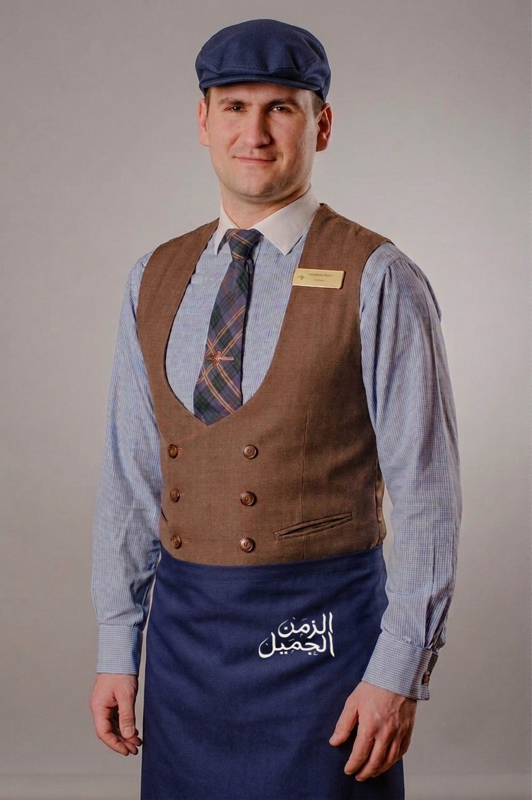
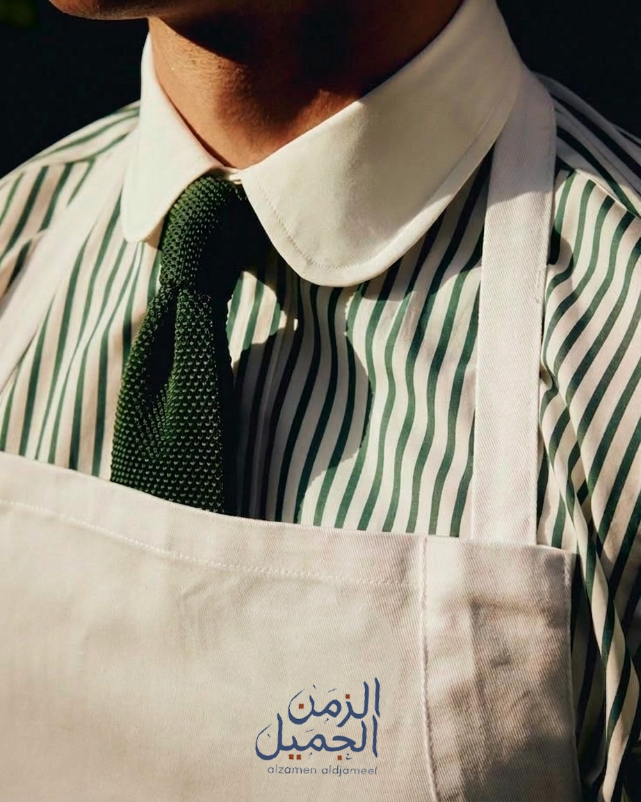
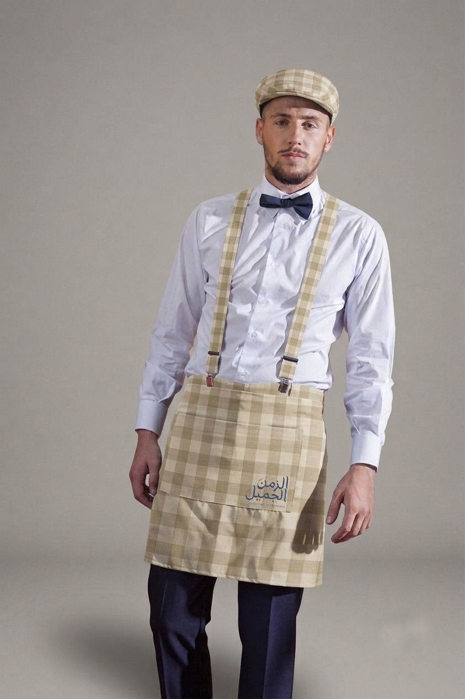

طواجن الفخّار 🔥
تُطهى وتُقدَّم في الفخّار داخل الفرن — طبق الإشارة بصريّاً ومذاقيّاً.
- من الفرن

٠١ — الفكرة
الزمن الجميل مطعم أفران: أغلب أطباقنا تُخبز في الفرن — طواجن الفخّار، صواني اللحم والدجاج، الفطائر والمعجّنات، والأرز بالفرن. طريقة طهي واحدة تجمع المنيو كله وتمنحه هويّة واضحة.
والمكان يستحضر أجواء الستينات والسبعينات في حوض المتوسط بكل تفاصيلها: الأثاث، الموسيقى، الروائح، والمفارش المربّعة. حيث يلتقي عبق الشام مع دفء الإسكندرية وبساطة الترّاتوريا.
الفرن ليس تفصيلاً تشغيلياً — بل مسرح. الضيف يرى الطبق يُدخل ويُخرج، ويشمّ قبل أن يذوق. وهذه طبقة تجربة لا تُنسخ بسهولة، ولا تُقارَن بمطعم يُخرج الطعام من مطبخ مغلق.
٠٢ — قلب الفكرة
قلب المطبخ، ومسرح التجربة.

◦ اضغط لتشتعل أكثر ◦
في المطاعم العادية يخرج الطعام من باب مغلق. عندنا، الفرن في الصالة: الضيف يرى الفخّار يدخل، ويسمع الخبز، ويشمّ قبل أن يذوق.
هذه ليست حركة تسويقيّة — بل ثلاث حواسّ تعمل قبل الطلب، وهي ما يرفع الفاتورة ويعيد الضيف.
اضغط الأسطوانة لتشغيل موسيقى الزمن الجميل
مشهد: الفرن المكشوف نقطة جذب بصريّة دائمة، ومحفّز تصوير ونشر.
رائحة: الخبز الطازج أقوى أداة تسويق في الممرّ التجاري — ولا تحتاج ميزانية.
اتساق: طريقة طهي واحدة تجمع المنيو كلّه وتمنحه هويّة واضحة.
مذاق: الحجر يحتفظ بالحرارة فيتوزّع الخبز بالتساوي، ويمنح القشرة طابعها.
٠٤ — الهويّة
اللوحة اللونيّة والنقشات أدناه مستخرجة من هويّتكم الحالية نفسها — لم نستبدلها، بل نظّمناها ووسّعنا استخدامها.
الشعار هو العنصر المخطوط الوحيد في الهويّة. كل النصوص بخطّ Alexandria — فلا يزاحم الشعارَ خطٌّ آخر.
الكحلي والأحمر من الشعار، والشرائط من خلفيّته.
خمس نقشات من بروفايلكم — أُعيد توظيفها كنظام لا كخلفيّات متفرّقة.
 دمشقي كحلي
دمشقي كحلي دمشقي أحمر
دمشقي أحمر زهور دقيقة
زهور دقيقة جينجهام أحمر
جينجهام أحمر جينجهام أزرق
جينجهام أزرق مخمل ذهبي
مخمل ذهبيalzamen aldjameel.
هي المستخدَمة في الشعار الرسمي، وفي تطريز الزيّ المنفَّذ فعلاً،
وفي النطاق المقترح.
alzamen aljameel بلا حرف d —
يُستبدل في الدفعة القادمة من المفارش.
٠٥ — الزمن
ليس ديكوراً على الحائط — بل ذاكرة مشتركة يعرفها الضيف قبل أن يقرأ المنيو. مرّر على القطع.


◦ مرّر على القطع ◦
٠٦ — التجربة
تصوّرات مبدئيّة للاتجاه البصري، وليست تصاميم تنفيذيّة نهائيّة.


٠٧ — استكشف
مرّر المؤشّر — أو إصبعك على الجوال — داخل الإطار.

◦ مرّر لتُضيء ◦
اسحب الشريط بين أجواء الرُّكن الداخلي وأجواء الترّاس.
 الرُّكن
الترّاس
الرُّكن
الترّاس
جولة
٠٨ — المنيو
مطبخ واحد يجمع حوض المتوسط في الستينات والسبعينات، ويجمعه الفرن. أعدنا ترتيب الأقسام ليتقدّم ما يُخبز — فهذا ما يميّزكم، وكان مدفوناً في منتصف المنيو.


تُطهى وتُقدَّم في الفخّار داخل الفرن — طبق الإشارة بصريّاً ومذاقيّاً.
صواني اللحم والدجاج والخضار، تُخبز بالبهارات حتى تتداخل النكهات.
معجّنات الصاج الطازجة والفطائر المخبوزة أمام الضيف.
أطباق متنوّعة من الأرزّ المتبّل بأجود أنواع البهارات والطهي المتقَن، لتقدّم الطعم الأصيل والمذاق الغنيّ.
تشكيلة شهيّة من المقبّلات والسلطات الطازجة التي تفتح الشهيّة وتُكمل متعة الوجبة.
تشكيلة مختارة من المشاوي المعدّة بنكهات غنيّة وطعم أصيل.
شاورما محضّرة على الطريقة البيتيّة.
تشكيلة غنيّة من أطباق المكرونة بصلصاتها اللذيذة ونكهاتها الفاخرة. ويمكن تقديمها بالفرن (جراتان).
حلويات الزمن الجميل وحلويات عصريّة — ومنها ما يُخبز في الفرن.

مشروبات ساخنة وباردة، وعصائر طازجة، ومشروبات الزمن الجميل.
لم يكن الزمن الجميل حِكراً على مدينة واحدة. كان زمناً واحداً عاشه حوض المتوسط كلّه: مقاهي بيروت، وكورنيش الإسكندرية، وترّاتوريا نابولي، وموانئ اليونان، وأسواق الشام.
ولذلك مائدتنا ميكس مقصود لا خلطاً عشوائياً: المزّة الشاميّة بجوار المقبّلات الإيطاليّة، والمشاوي بجوار المعجّنات، والطواجن بجوار المكرونة. ما يجمعها ليس البلد — بل الفرن والزمن والمفارش المربّعة التي كانت على كل طاولة من طنجة إلى بيروت.
الضيف لا يأتي ليأكل مطبخاً بعينه — بل ليجلس في زمن يعرفه ويحبّه.
٠٩ — اليونيفورم
ثلاث إطلالات مُصمَّمة ومُصوَّرة ومنفَّذة فعلاً — لا تصوّراً على ورق. والشعار مطرّز على كل مريلة، فالضيف يرى علامةً واحدة من الباب إلى الطبق.



الشعار مطرّز كحلي أسفل يمين المريلة، على جيب أمامي.
الشعار مطرّز أبيض وسط مريلة الدينم، والشارة النحاسيّة على الصديري.
الشعار مطرّز كحلي بنقاط حمراء داخل الخطّ، على جيب المريلة — أجمل تنفيذ في الطقم.
الشعار مطرّز بخيط ذهبي على الصدريّة الجلديّة.
للاستفسار والحجز والتواصل.
النطاق المقترح: www.alzamen-aldjameel.com